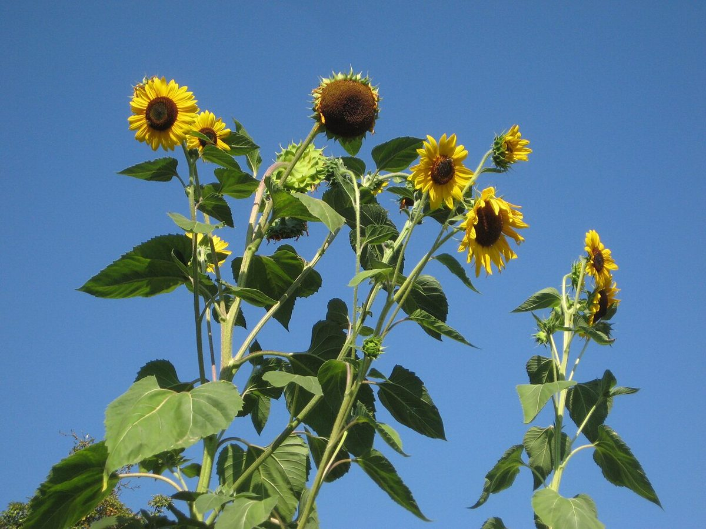
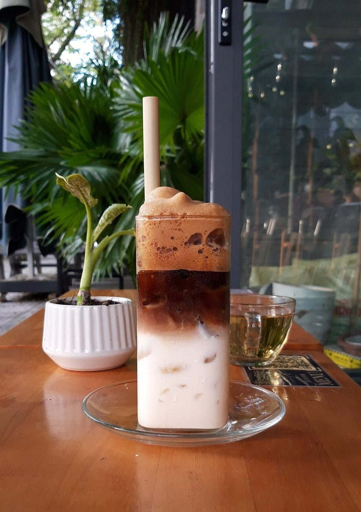
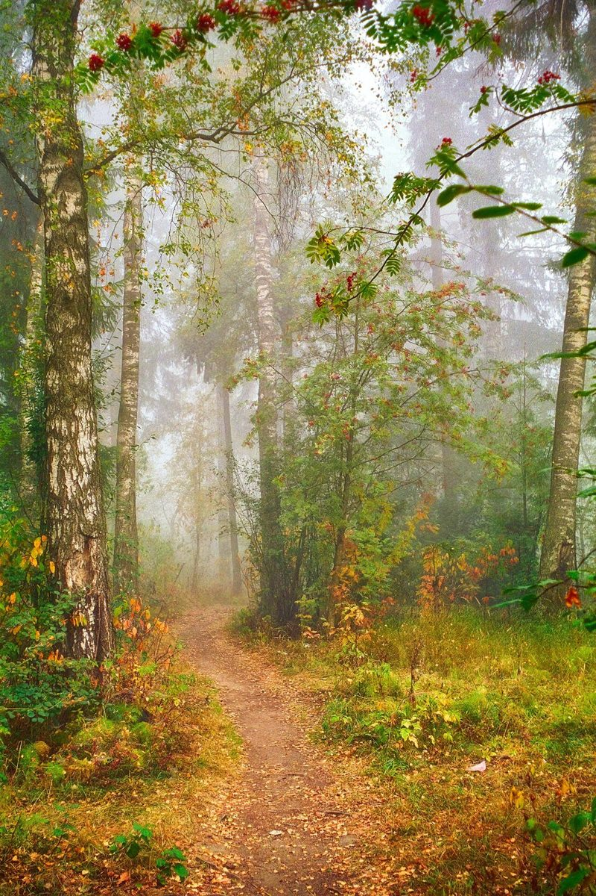

NOPPO
カフェ / 佐賀県伊万里市
のっぽな一枚目
佐賀県伊万里市にあるカフェ「Noppo」のご案内ページです。営業時間やメニューなど、詳しいことは準備中。電話番号とInstagramは掲載しています。

制作側の連想
「Noppo」から、背の高いものを集めました
制作側の連想で、お店の理念・由来とは無関係です。店名の由来や意味は分かりません。「Noppo」の響きから「のっぽ」(背の高いもの)を連想し、このページでは縦に長いもの、上へ伸びるものの写真を、背の順に並べる作りにしました。縦に並ぶ大きな文字や、左端の目盛りもその連想から。お店の実際の様子とは関係がありません。
背くらべ(イメージ)
低いほうから、高いほうへ。
写真は伊万里市のものではありません。「背が高い」「重ねて高くなる」ものを選んだ、国外・撮影地不明のフリー素材です。






ご案内
お店のこと(確認できたものだけ)
| 所在地 | 〒848-0021 佐賀県伊万里市大坪町甲2828-6 |
|---|---|
| 電話 | 070-1355-1973 |
| 営業時間 | 準備中 |
| 定休日 | 準備中 |
| ご予約 | 準備中 |
| 駐車場 | 準備中 |
| SNS | Instagram @noppo_imari |